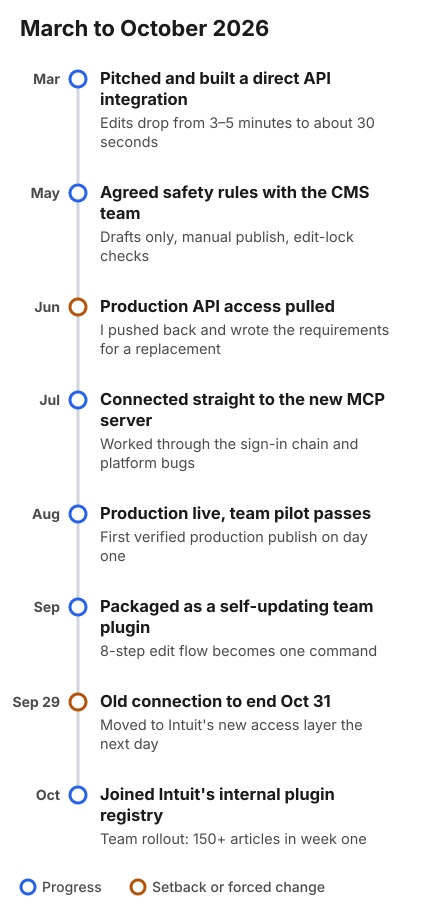
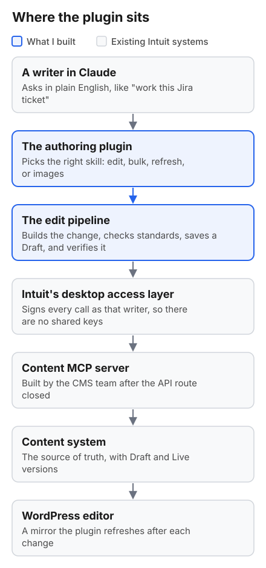
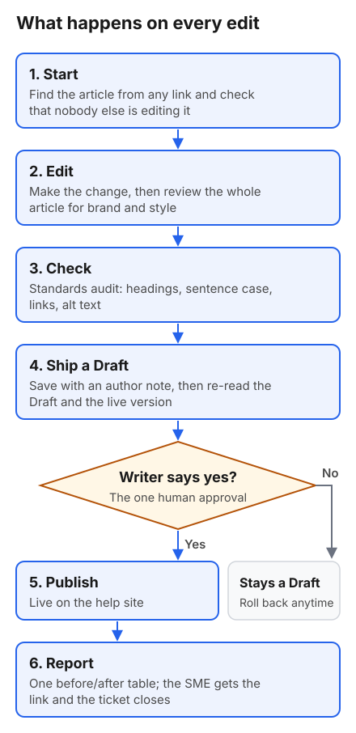
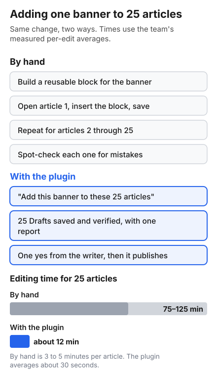
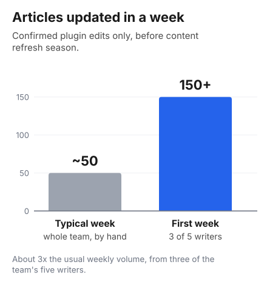

Help-Content Authoring Plugin
How a writing team went from editing help articles one at a time to asking Claude for the change
Overview
Intuit's help content lives in a knowledge base of more than 20,000 articles, notices, and reusable blocks across TurboTax, Credit Karma, and the professional tax products. Our writers kept it current by hand, one article at a time, in a WordPress editor that was never built for bulk work.
I pitched a way to change that, built it, and spent most of 2026 getting it to the point where the whole team could use it. Writers now tell Claude what they need ("work this Jira ticket," "replace this phrase in every ProSeries article that mentions it," "add this screenshot to step 3") and the plugin does the work. It finds the articles, makes the change, checks it against our standards, saves it as a Draft, confirms the change landed, and shows a before/after table. Nothing goes live until a writer says yes.
This was my idea and my build. I designed the skills library and how the pieces fit together, and I built every connection to WordPress myself: first through the REST API, then straight to the CMS team's MCP server, then through Intuit's new desktop access layer when the old route was retired.
The first week the whole team had it, we updated 5.5 times as many articles as two weeks earlier, when only two of us were using it. That's with four of five writers onboarded and before content refresh season, our busiest stretch, has started.
The Problem
Most help-content work is maintenance. A product name changes, a tax law changes, a link breaks, or an SME files a ticket asking for the same sentence to be fixed in a dozen places. Every one of those meant opening the CMS, finding each affected article, editing it, and checking it. One edit took 3 to 5 minutes. A sweep across a product line could take days, and things slipped through. One sweep I ran later found a live article still describing a tax credit phase-out that had been repealed in 2022.
The team that owns the CMS was, fairly, nervous about anyone writing to production in bulk. So I had two problems to solve: make editing fast enough to matter, and make it safe enough that the CMS team, my managers, and the writers would trust it.
How It Got Built

Nobody assigned this. I pitched it, built it, and kept at it when the first route closed.
March to June: the API route. I used Claude to find a way to edit articles through WordPress's REST API, and connected Claude Code to it with a human review on every write. Edits dropped from 3 to 5 minutes to about 30 seconds, and batches ran at 10+ articles a minute. I worked out a set of safety rules with the CMS engineering team: Draft-only writes, manual publishing, named operators, capped batches, and a check that refuses to write if someone else has the article open. I tested that check with a second operator, and it worked. Then production access was pulled over security concerns. I went back with proof that every safeguard had held up in testing, and by then the objection had changed: a direct API connection just wasn't where engineering wanted things to end up.
June and July: shaping the replacement. The CMS team built an MCP server for content authoring, with an internal interface on top. I didn't want writers to lose anything in the move, so I wrote up every capability the API route had, ranked by what the new tool needed on day one, plus a test plan with real match counts so gaps would show up as numbers instead of opinions.
July and August: going direct. The interface wasn't ready, so I connected Claude Code straight to the MCP server underneath it. That took a few weeks of working through the sign-in chain and some platform bugs. Production went live on August 19, and our first verified production publish landed the same day. A pilot with a teammate on Windows showed the team already had the access it needed, so we never had to file a permissions request.
September: a plugin for the team. I packaged my personal skills into a plugin that updates itself, so a fix reaches everyone the next time they run it. I replaced an 8-step manual edit flow with one command, ran a round of testing with three writers, and shipped their fixes within days.
October: the cutoff. On September 29 we learned the direct connection would end on October 31. I had the plugin working through Intuit's new desktop access layer the next day, verified it on Mac and Windows, and folded everything into Intuit's internal plugin registry. Now there's one install, one place to fix things, and nobody left on a connection that's about to stop working.
How It Works

A writer works in Claude like they'd message a teammate. The plugin decides which skill fits the request (editing one article, working a ticket, a bulk change, a tax-law refresh, an image upload) and hands it to the edit pipeline. Every call goes out through Intuit's desktop access layer, which signs it as that writer. There are no shared passwords, and every Draft and publish shows up under the writer's own name.
The content system is the source of truth, and WordPress is a mirror that can lag behind. The plugin refreshes the WordPress copy after each change so writers see what they expect when they open an article.

The pipeline finds the article from any link a writer pastes and checks that nobody else is editing it. It makes the change and reviews the whole article against brand and house style, fixing obvious problems in the same Draft. A standards check covers headings, sentence case, link formats, and alt text. Then it saves the Draft, re-reads both the Draft and the live version, and stops if anything doesn't match or someone else changed the article in the meantime.
After the writer approves, it publishes, posts a short note on the Jira ticket with the customer-facing link for the SME, and closes the ticket.
One Approval, in the Right Place
The design decision I spent the most time on was where a person has to say yes.
Early versions stopped for approval constantly, including on steps where an approval didn't protect anything, and it slowed writers down. So the plugin has one gate: publishing, archiving, and multi-article bulk writes wait for a yes, and everything else just runs. Drafts, receipts, and rollback are the safety net.
A few other rules are built in. Writes only go through the pipeline, because the pipeline is what checks the change. Image uploads wait for the article's approval, since they're public the moment they publish. If a call gets denied, the plugin doesn't try a different tool to get around it. And when something fails, it tells the writer directly instead of posting in a team channel.
Bulk Changes

Here's a common one. We need the same banner on 25 articles. By hand, a writer builds a reusable block, then opens each article, inserts it, saves, and checks it, 25 times. With the plugin, the writer asks once, gets 25 Drafts with a single report, and approves them in one go.
The same approach handles a CSV of changes: find-and-replace across articles, several edits to one article, tag and SEO updates, even creating new articles in bulk. The run doesn't stop on a bad row, and it ends with a receipt the writer can review. For tax-law updates, another team's impact analysis produces a work order, and the plugin turns it into one Draft per affected article.
Some articles don't need a writer at all now. The Delayed Acknowledgments article tells accountants which states are running late on e-file acknowledgments. It now rebuilds and publishes itself every day from the source data, with an hourly check that keeps the known-issue banners current. New issues are proposed for a person to approve, never published automatically.
Making It Usable for Writers
My teammates are writers, not developers. The first time a few of them saw raw terminal output, it scared them a little. So a lot of the work went into everything around the tool:
- A setup wizard and an interactive guide for non-technical writers, including a tab that explains why the tool exists
- Sign-in repair in plain language. When authentication fails, the plugin prints click-by-click steps, and it retries the failures that fix themselves instead of blaming the writer
- A Chrome extension that adds an "Open in Editor" button to any public help article
- A routing hook, so a plain request like "execute this Jira" reaches the plugin even when a writer doesn't name it. I added it after a teammate's request never triggered the plugin at all
Impact

- 5.5 times as many articles updated in the first week the whole team had the plugin, compared with two weeks earlier, when only another writer and I had it.
- 150+ confirmed plugin edits that week from three writers, about three times the team's usual weekly volume.
- All of this before content refresh season started, with four of five writers onboarded and a round of their feedback still to work into the next release. The numbers should keep climbing.
- About 1,060 hours a year saved, by the team's estimate. Before refresh season, the writers who've done it in past years listed the tasks this would cover and how long each takes. The biggest item, roughly 900 hours of refresh editing, is the one I built for first.
- A single edit went from 3 to 5 minutes by hand to about 30 seconds.
- 20,700+ articles, notices, and reusable blocks reachable across consumer, small business, and professional tax help.
- Writers on Mac and Windows editing production with only their normal sign-in.
- The team moved off a retiring connection before the October 31 cutoff.
- Part of Intuit's internal plugin registry, with an automated self-test suite.
- Team Rockstar award, August 2026.
What I Took From It
A lot of content design at this scale happens behind the words: how content gets changed, who checks it, and what keeps it accurate after it ships. Here the skills are written instructions, the standards checks are the style guide in code, and the approval model is a decision about what to ask a person and when. That's the same kind of judgment I use writing an error message, applied to a whole team's workflow.
It also taught me to keep moving when a door closes. Access got pulled, the official interface wasn't ready, and the connection we depended on was being retired. Each time I found the next route and brought the right people along, and the work kept going.